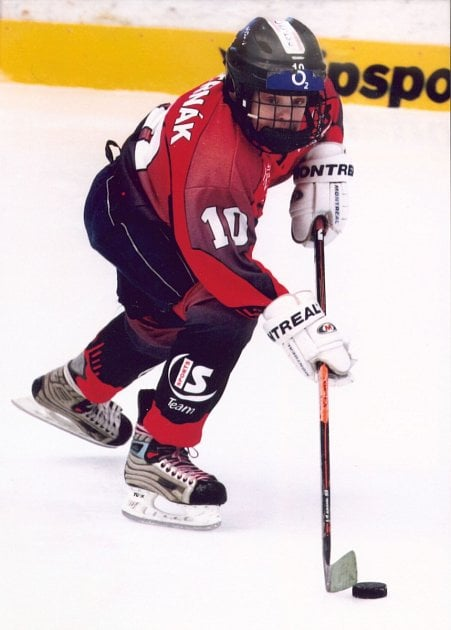

David Pastrňák was born on 25 May 1996 in Havířov, Czechia, to father Milan Pastrňák and mother Marcela Ziembova.He first became interested in hockey through his father, who was a professional player and later a coach. He began skating when he was three years old. Milan left the family and moved to Karviná when Pastrňák was three years old, and after that Pastrňák spent weekends with his father. For most of his childhood, he lived with his mother and older brother in a two-bedroom apartment.
When he was 13 years old, Pastrňák got an agent and his hockey equipment was paid for; this reduced the financial stress on his family.At age 15, Pastrňák moved to the nearby town of Třinec, where he lived alone in a hotel room. This was considered a test to ensure that Pastrňák could move to Sweden the next year.During the 2011–12 season, Pastrňák led the Czech under 18 league in goals and points. For the 2012–13 season, Pastrňák moved to Sweden to play for the junior squad of Södertälje SK. While in Södertälje, Pastrňák learned to speak English and Swedish, and started to watch NHL games for the first time. In May 2013, just before Pastrňák's 17th birthday, Milan died after a years-long battle with skin cancer. Grieving his father's death, Pastrňák intensified his training.

back